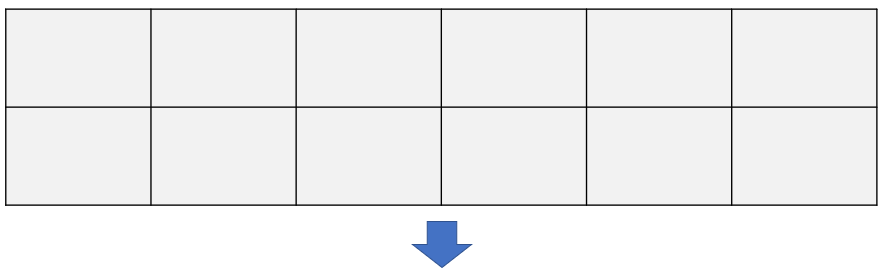

Welcome
VideoWall es una herramienta tecnológica clave para la gestión del área del Inversiones. En principio, permite monitorear:
-
Mercados financieros
- Bloomberg Live TV
-
Métricas internas
- Sistema Aladdin
- Análisis internos
También facilita la proyección de charlas, conferencias y seminarios, haciendo uso del sistema de sonido de la oficina.
Hardware
Screens
En términos de hardware, está compuesto por 12 monitores, los que están configurados para tener un layout compuesto por 3 pantallas principales.

Servers
En cuanto a equipos, está formado por 3 ordenadores:
| Identifier | IP Adresss | Purpose | Description |
|---|---|---|---|
| DESKTOP-4KF3AUR | 10.220.23.148 | Datapath | Coordina el contenido desplegado en todos los monitores del VideoWall independiente del layout configurado. |
| SURA-10397 | 10.220.23.144 | Primary Server | Servidor primario para las aplicaciones desplegadas en VideoWall En ese sentido, toda aplicación serán alojada por defecto en esta máquina |
| SURA-10424 | 10.220.23.146 | Secondary Server | Servidor secundario para las aplicaciones desplegadas en VideoWall Por tanto, existirá una version actualizada de cada aplicación en esta máquina, la que se activará sólo en caso de tener problemas con el equipo anterior SURA-10397 |
Aplications
Slideshow
Corresponde al nuevo visualizador de imágenes del VideoWall. Es el aplicativo que ha reemplazado al antiguo Rotador de imágenes
- Primary URL : http://sura-10397:8080/slideshow
- Secondary URL : http://sura-10424:8080/slideshow
Scheduled Tasks
Actualmente, las tareas agendadas están siendo administradas con el Task Manager de Windows
Under development
El objetivo es contar con un framework para el modelamiento y ejecución de tareas agendadas, además de pipelines para modelos de Data Science. Para ello, se está evaluando factibilidad de soluciones: Apache Airflow y Prefect
Market Monitor
Corresponde a la siguiente aplicación a ser desarrollada para el VideoWall.
Under development
Se espera que la aplicación contenga:
- Dashboard con indicadores y Sentiment Analysis de la Fed
- Calendario Económico intradía (source: investing.com)
- Monitor de índices financieros nacionales e internacionales (souces: investing.com y Bolsa de Santiago)
Others
-
Bloomberg Live TV: provee de noticias, datos y análisis sobre los mercados, con artíclos de Businessweek y Bloomberg News
-
Twitter: Es utilizado como herramienta de monitoreo de mercado y personas influyentes. Para ello, se dispone de una cuenta que sigue a 134 contactos